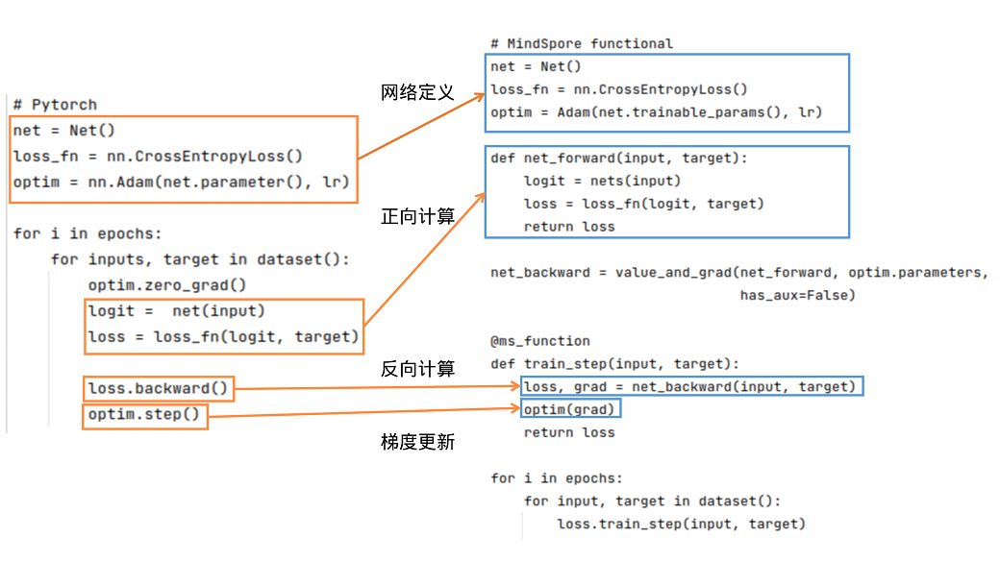

网络搭建

基础逻辑
PyTorch和MindSpore的基础逻辑如下图所示：

可以看到，PyTorch和MindSpore在实现流程中一般都需要网络定义、正向计算、反向计算、梯度更新等步骤。
网络定义：在网络定义中，一般会定义出需要的前向网络，损失函数和优化器。在Net()中定义前向网络，PyTorch的网络继承nn.Module；类似地，MindSpore的网络继承nn.Cell。在MindSpore中，损失函数和优化器除了使用MindSpore中提供的外，用户还可以使用自定义的优化器。可参考模型模块自定义。可以使用functional/nn等接口拼接需要的前向网络、损失函数和优化器。
正向计算：运行实例化后的网络，可以得到logit，将logit和target作为输入计算loss。需要注意的是，如果正向计算的函数有多个输出，在反向计算时需要注意多个输出对于计算结果的影响。
反向计算：得到loss后，我们可以进行反向计算。在PyTorch中可使用loss.backward()计算梯度，在MindSpore中，先用mindspore.grad()定义出反向传播方程net_backward，再将输入传入net_backward中，即可计算梯度。如果正向计算的函数有多个输出，在反向计算时，可将has_aux设置为True，即可保证只有第一个输出参与求导，其它输出值将直接返回。对于反向计算中接口用法区别详见自动微分对比。
梯度更新：将计算后的梯度更新到网络的Parameters中。在PyTorch中使用optim.step()；在MindSpore中，将Parameter的梯度传入定义好的optim中，即可完成梯度更新。
网络基本构成单元 Cell
MindSpore的网络搭建主要使用Cell进行图的构造，用户需要定义一个类继承 Cell 这个基类，在 init 里声明需要使用的API及子模块，在 construct 里进行计算， Cell 在 GRAPH_MODE (静态图模式)下将编译为一张计算图，在 PYNATIVE_MODE (动态图模式)下作为神经网络的基础模块。一个基本的 Cell 搭建过程如下所示：
import mindspore.nn as nn
import mindspore.ops as ops
class MyCell(nn.Cell):
def __init__(self, forward_net):
super(MyCell, self).__init__(auto_prefix=True)
self.net = forward_net
self.relu = ops.ReLU()
def construct(self, x):
y = self.net(x)
return self.relu(y)
inner_net = nn.Conv2d(120, 240, 4, has_bias=False)
my_net = MyCell(inner_net)
print(my_net.trainable_params())
运行结果：
[Parameter (name=net.weight, shape=(240, 120, 4, 4), dtype=Float32, requires_grad=True)]
参数的名字一般是根据__init__定义的对象名字和参数定义时用的名字组成的，比如上面的例子中，卷积的参数名为net.weight，其中，net是self.net = forward_net中的对象名，weight是Conv2d中定义卷积的参数时的name：self.weight = Parameter(initializer(self.weight_init, shape), name='weight')。
Cell提供了auto_prefix接口用来判断Cell中的参数名是否加对象名这层信息，默认是True，也就是加对象名。如果auto_prefix设置为False，则上面这个例子中打印的Parameter的name是weight。通常骨干网络auto_prefix应设置为True。用于训练的优化器、 :class:mindspore.nn.TrainOneStepCell 等，应设置为False，以避免骨干网络的权重参数名被误改。
单元测试
搭建完Cell之后，最好对每个Cell构建一个单元测试方法与对标代码比较，比如上面的例子，其PyTorch的构建代码为：
import torch.nn as torch_nn
class MyCell_pt(torch_nn.Module):
def __init__(self, forward_net):
super(MyCell_pt, self).__init__()
self.net = forward_net
self.relu = torch_nn.ReLU()
def forward(self, x):
y = self.net(x)
return self.relu(y)
inner_net_pt = torch_nn.Conv2d(120, 240, kernel_size=4, bias=False)
pt_net = MyCell_pt(inner_net_pt)
for i in pt_net.parameters():
print(i.shape)
torch.Size([240, 120, 4, 4])
有了构建Cell的脚本，需要使用相同的输入数据和参数，对输出做比较：
import numpy as np
import mindspore as ms
import torch
x = np.random.uniform(-1, 1, (2, 120, 12, 12)).astype(np.float32)
for m in pt_net.modules():
if isinstance(m, torch_nn.Conv2d):
torch_nn.init.constant_(m.weight, 0.1)
for _, cell in my_net.cells_and_names():
if isinstance(cell, nn.Conv2d):
cell.weight.set_data(ms.common.initializer.initializer(0.1, cell.weight.shape, cell.weight.dtype))
y_ms = my_net(ms.Tensor(x))
y_pt = pt_net(torch.from_numpy(x))
diff = np.max(np.abs(y_ms.asnumpy() - y_pt.detach().numpy()))
print(diff)
# ValueError: operands could not be broadcast together with shapes (2,240,12,12) (2,240,9,9)
可以发现MindSpore和PyTorch的输出不一样，什么原因呢？
查询API差异文档发现，Conv2d的默认参数在MindSpore和PyTorch上有区别，
MindSpore默认使用same模式，PyTorch默认使用pad模式，迁移时需要改一下MindSpore Conv2d的pad_mode：
import numpy as np
import mindspore as ms
import torch
inner_net = nn.Conv2d(120, 240, 4, has_bias=False, pad_mode="pad")
my_net = MyCell(inner_net)
# 构造随机输入
x = np.random.uniform(-1, 1, (2, 120, 12, 12)).astype(np.float32)
for m in pt_net.modules():
if isinstance(m, torch_nn.Conv2d):
# 固定PyTorch初始化参数
torch_nn.init.constant_(m.weight, 0.1)
for _, cell in my_net.cells_and_names():
if isinstance(cell, nn.Conv2d):
# 固定MindSpore初始化参数
cell.weight.set_data(ms.common.initializer.initializer(0.1, cell.weight.shape, cell.weight.dtype))
y_ms = my_net(ms.Tensor(x))
y_pt = pt_net(torch.from_numpy(x))
diff = np.max(np.abs(y_ms.asnumpy() - y_pt.detach().numpy()))
print(diff)
运行结果：
2.9355288e-06
整体误差在万分之一左右，基本符合预期。在迁移Cell的过程中最好对每个Cell都做一次单元测试，保证迁移的一致性。
Cell常用的方法介绍
Cell是MindSpore中神经网络的基本构成单元，提供了很多设置标志位以及好用的方法，下面来介绍一些常用的方法。
手动混合精度
MindSpore提供了一种自动混合精度的方法，详见Model的amp_level属性。
但是有的时候开发网络时希望混合精度策略更加的灵活，MindSpore也提供了to_float的方法手动地添加混合精度。
to_float(dst_type): 在Cell和所有子Cell的输入上添加类型转换，以使用特定的浮点类型运行。
如果 dst_type 是 ms.float16 ，Cell的所有输入(包括作为常量的input， Parameter， Tensor)都会被转换为float16。例如，我想将一个网络里所有的BN和loss改成float32类型，其余操作是float16类型，可以这么做：
import mindspore as ms
from mindspore import nn
# 定义模型
class Network(nn.Cell):
def __init__(self):
super().__init__()
self.layer1 = nn.SequentialCell([
nn.Conv2d(3, 12, kernel_size=3, pad_mode='pad', padding=1),
nn.BatchNorm2d(12),
nn.ReLU(),
nn.MaxPool2d(kernel_size=2, stride=2)
])
self.layer2 = nn.SequentialCell([
nn.Conv2d(12, 4, kernel_size=3, pad_mode='pad', padding=1),
nn.BatchNorm2d(4),
nn.ReLU(),
nn.MaxPool2d(kernel_size=2, stride=2)
])
self.pool = nn.AdaptiveMaxPool2d((5, 5))
self.fc = nn.Dense(100, 10)
def construct(self, x):
x = self.layer1(x)
x = self.layer2(x)
x = self.pool(x)
x = x.view((-1, 100))
out = nn.Dense(x)
return out
net = Network()
net.to_float(ms.float16) # 将net里所有的操作加float16的标志，框架会在编译时在输入加cast方法
for _, cell in net.cells_and_names():
if isinstance(cell, (nn.BatchNorm1d, nn.BatchNorm2d, nn.BatchNorm3d)):
cell.to_float(ms.float32)
loss = nn.SoftmaxCrossEntropyWithLogits(sparse=True, reduction='mean').to_float(ms.float32)
net_with_loss = nn.WithLossCell(net, loss_fn=loss)
自定义的to_float和Model里的amp_level冲突，使用自定义的混合精度就不要设置Model里的amp_level。
参数初始化
默认权重初始化不同
我们知道权重初始化对网络的训练十分重要。每个nn接口一般会有一个隐式的声明权重，在不同的框架中，隐式的声明权重可能不同。即使功能一致，隐式声明的权重初始化方式分布如果不同，也会对训练过程产生影响，甚至无法收敛。
常见隐式声明权重的nn接口：Conv、Dense(Linear)、Embedding、LSTM 等，其中区别较大的是 Conv 类和 Dense 两种接口。MindSpore和PyTorch的 Conv 类和 Dense 隐式声明的权重和偏差初始化方式分布相同。
Conv2d
mindspore.nn.Conv2d的weight为：\(\mathcal{U} (-\sqrt{k},\sqrt{k} )\)，bias为：\(\mathcal{U} (-\sqrt{k},\sqrt{k} )\)。
torch.nn.Conv2d的weight为：\(\mathcal{U} (-\sqrt{k},\sqrt{k} )\)，bias为：\(\mathcal{U} (-\sqrt{k},\sqrt{k} )\)。
tf.keras.Layers.Conv2D的weight为：glorot_uniform，bias为：zeros。
其中，\(k=\frac{groups}{c_{in}*\prod_{i}^{}{kernel\_size[i]}}\)
Dense(Linear)
mindspore.nn.Dense的weight为：\(\mathcal{U}(-\sqrt{k},\sqrt{k})\)，bias为：\(\mathcal{U}(-\sqrt{k},\sqrt{k} )\)。
torch.nn.Linear的weight为：\(\mathcal{U}(-\sqrt{k},\sqrt{k})\)，bias为：\(\mathcal{U}(-\sqrt{k},\sqrt{k} )\)。
tf.keras.Layers.Dense的weight为：glorot_uniform，bias为：zeros。
其中，\(k=\frac{groups}{in\_features}\) 。
对于没有正则化的网络，如没有 BatchNorm 算子的 GAN 网络，梯度很容易爆炸或者消失，权重初始化就显得十分重要，各位开发者应注意权重初始化带来的影响。
参数初始化API对比
每个 torch.nn.init 的API都可以和MindSpore一一对应，除了 torch.nn.init.calculate_gain() 之外。更多信息，请查看PyTorch与MindSpore API映射表。
gain用来衡量非线性关系对于数据标准差的影响。由于非线性会影响数据的标准差，可能会导致梯度爆炸或消失。
| mindspore.common.initializer | torch.nn.init |
|
|
mindspore.common.initializer用于在并行模式中延迟Tensor的数据的初始化。只有在调用了init_data()之后，才会使用指定的init来初始化Tensor的数据。每个Tensor只能使用一次init_data()。在运行以上代码之后，x其实尚未完成初始化。如果此时x被用来计算，将会作为0来处理。然而，在打印时，会自动调用init_data()。torch.nn.init需要一个Tensor作为输入，将输入的Tensor原地修改为目标结果，运行上述代码之后，x将不再是非初始化状态，其元素将服从均匀分布。
自定义初始化参数
MindSpore封装的高阶API里一般会给参数一个默认的初始化，当这个初始化分布与需要使用的初始化、PyTorch的初始化不一致，此时需要进行自定义初始化。网络参数初始化介绍了一种在使用API属性进行初始化的方法，这里介绍一种利用Cell进行参数初始化的方法。
参数的相关介绍请参考网络参数，本节主要以Cell为切入口，举例获取Cell中的所有参数，并举例说明怎样给Cell里的参数进行初始化。
注意本节的方法不能在
construct里执行，在网络中修改参数的值请使用assign。
set_data(data, slice_shape=False)设置参数数据。
MindSpore支持的参数初始化方法参考mindspore.common.initializer，当然也可以直接传入一个定义好的Parameter对象。
import math
import mindspore as ms
from mindspore import nn
# 定义模型
class Network(nn.Cell):
def __init__(self):
super().__init__()
self.layer1 = nn.SequentialCell([
nn.Conv2d(3, 12, kernel_size=3, pad_mode='pad', padding=1),
nn.BatchNorm2d(12),
nn.ReLU(),
nn.MaxPool2d(kernel_size=2, stride=2)
])
self.layer2 = nn.SequentialCell([
nn.Conv2d(12, 4, kernel_size=3, pad_mode='pad', padding=1),
nn.BatchNorm2d(4),
nn.ReLU(),
nn.MaxPool2d(kernel_size=2, stride=2)
])
self.pool = nn.AdaptiveMaxPool2d((5, 5))
self.fc = nn.Dense(100, 10)
def construct(self, x):
x = self.layer1(x)
x = self.layer2(x)
x = self.pool(x)
x = x.view((-1, 100))
out = nn.Dense(x)
return out
net = Network()
for _, cell in net.cells_and_names():
if isinstance(cell, nn.Conv2d):
cell.weight.set_data(ms.common.initializer.initializer(
ms.common.initializer.HeNormal(negative_slope=0, mode='fan_out', nonlinearity='relu'),
cell.weight.shape, cell.weight.dtype))
elif isinstance(cell, (nn.BatchNorm2d, nn.GroupNorm)):
cell.gamma.set_data(ms.common.initializer.initializer("ones", cell.gamma.shape, cell.gamma.dtype))
cell.beta.set_data(ms.common.initializer.initializer("zeros", cell.beta.shape, cell.beta.dtype))
elif isinstance(cell, (nn.Dense)):
cell.weight.set_data(ms.common.initializer.initializer(
ms.common.initializer.HeUniform(negative_slope=math.sqrt(5)),
cell.weight.shape, cell.weight.dtype))
cell.bias.set_data(ms.common.initializer.initializer("zeros", cell.bias.shape, cell.bias.dtype))
参数冻结
Parameter有一个requires_grad的属性来判断是否需要做参数更新，当requires_grad=False时相当于PyTorch的buffer对象。
我们可以通过Cell的parameters_dict、get_parameters和trainable_params来获取Cell中的参数列表。
parameters_dict：获取网络结构中所有参数，返回一个以key为参数名，value为参数值的
OrderedDict。get_parameters：获取网络结构中的所有参数，返回
Cell中Parameter的迭代器。trainable_params：获取
Parameter中requires_grad为True的属性，返回可训参数的列表。
import mindspore.nn as nn
net = nn.Dense(2, 1, has_bias=True)
print(net.trainable_params())
for param in net.trainable_params():
param_name = param.name
if "bias" in param_name:
param.requires_grad = False
print(net.trainable_params())
运行结果：
[Parameter (name=weight, shape=(1, 2), dtype=Float32, requires_grad=True), Parameter (name=bias, shape=(1,), dtype=Float32, requires_grad=True)]
[Parameter (name=weight, shape=(1, 2), dtype=Float32, requires_grad=True)]
在定义优化器时，使用net.trainable_params()获取需要进行参数更新的参数列表。
除了使用给参数设置requires_grad=False来不更新参数外，还可以使用stop_gradient来阻断梯度计算以达到冻结参数的作用。那什么时候使用requires_grad=False，什么时候使用stop_gradient呢？

如上图所示，requires_grad=False不更新部分参数，但是反向的梯度计算还是正常执行的；
stop_gradient会直接截断反向梯度，当需要冻结的参数之前没有需要训练的参数时，两者在功能上是等价的。
但是stop_gradient会更快（少执行了一部分反向梯度计算）。
当冻结的参数之前有需要训练的参数时，只能使用requires_grad=False。
另外，stop_gradient需要加在网络的计算链路里，作用的对象是Tensor：
a = A(x)
a = ops.stop_gradient(a)
y = B(a)
参数保存和加载
MindSpore提供了load_checkpoint和save_checkpoint方法用来参数的保存和加载，需要注意的是参数保存时，保存的是参数列表，参数加载时对象必须是Cell。
在参数加载时，可能参数名对不上需要做一些修改，可以直接构造一个新的参数列表给到load_checkpoint加载到Cell。
import mindspore as ms
import mindspore.ops as ops
import mindspore.nn as nn
net = nn.Dense(2, 1, has_bias=True)
for param in net.get_parameters():
print(param.name, param.data.asnumpy())
ms.save_checkpoint(net, "dense.ckpt")
dense_params = ms.load_checkpoint("dense.ckpt")
print(dense_params)
new_params = {}
for param_name in dense_params:
print(param_name, dense_params[param_name].data.asnumpy())
new_params[param_name] = ms.Parameter(ops.ones_like(dense_params[param_name].data), name=param_name)
ms.load_param_into_net(net, new_params)
for param in net.get_parameters():
print(param.name, param.data.asnumpy())
运行结果：
weight [[-0.0042482 -0.00427286]]
bias [0.]
{'weight': Parameter (name=weight, shape=(1, 2), dtype=Float32, requires_grad=True), 'bias': Parameter (name=bias, shape=(1,), dtype=Float32, requires_grad=True)}
weight [[-0.0042482 -0.00427286]]
bias [0.]
weight [[1. 1.]]
bias [1.]
动态图与静态图
对于Cell，MindSpore提供GRAPH_MODE（静态图）和PYNATIVE_MODE（动态图）两种模式，详情请参考动态图和静态图。
PyNative模式下模型进行推理的行为与一般Python代码无异。但是在训练过程中，注意一旦将Tensor转换成numpy做其他的运算后将会截断网络的梯度，相当于PyTorch的detach。
而在使用GRAPH_MODE时，通常会出现语法限制。在这种情况下，需要对Python代码进行图编译操作，而这一步操作中MindSpore目前还未能支持完整的Python语法全集，所以construct函数的编写会存在部分限制。具体限制内容可以参考MindSpore静态图语法。
相较于详细的语法说明，常见的限制可以归结为以下几点：
场景1
限制：构图时（
construct函数部分或者用@jit修饰的函数），不要调用其他Python库，例如numpy、scipy，相关的处理应该前移到__init__阶段。 措施：使用MindSpore内部提供的API替换其他Python库的功能。常量的处理可以前移到__init__阶段。场景2
限制：构图时不要使用自定义类型，而应该使用MindSpore提供的数据类型和Python基础类型，可以使用基于这些类型的tuple/list组合。 措施：使用基础类型进行组合，可以考虑增加函数参数量。函数入参数没有限制，并且可以使用不定长输入。
场景3
限制：构图时不要对数据进行多线程或多进程处理。 措施：避免网络中出现多线程处理。
自定义反向
但是有的时候MindSpore不支持某些处理，需要使用一些三方的库的方法，但是我们又不想截断网络的梯度，这时该怎么办呢？这里介绍一种在PYNATIVE_MODE模式下，通过自定义反向规避此问题的方法：
有这么一个场景，需要随机有放回的选取大于0.5的值，且每个batch的shape固定是max_num。但是这个随机有放回的操作目前没有MindSpore的API支持，这时我们在PYNATIVE_MODE下使用numpy的方法来计算，然后自己构造一个梯度传播的过程。
import numpy as np
import mindspore as ms
import mindspore.nn as nn
import mindspore.ops as ops
ms.set_context(mode=ms.PYNATIVE_MODE)
ms.set_seed(1)
class MySampler(nn.Cell):
# 自定义取样器，在每个batch选取max_num个大于0.5的值
def __init__(self, max_num):
super(MySampler, self).__init__()
self.max_num = max_num
def random_positive(self, x):
# 三方库numpy的方法，选取大于0.5的位置
pos = np.where(x > 0.5)[0]
pos_indice = np.random.choice(pos, self.max_num)
return pos_indice
def construct(self, x):
# 正向网络构造
batch = x.shape[0]
pos_value = []
pos_indice = []
for i in range(batch):
a = x[i].asnumpy()
pos_ind = self.random_positive(a)
pos_value.append(ms.Tensor(a[pos_ind], ms.float32))
pos_indice.append(ms.Tensor(pos_ind, ms.int32))
pos_values = ops.stack(pos_value, axis=0)
pos_indices = ops.stack(pos_indice, axis=0)
print("pos_values forword", pos_values)
print("pos_indices forword", pos_indices)
return pos_values, pos_indices
x = ms.Tensor(np.random.uniform(0, 3, (2, 5)), ms.float32)
print("x", x)
sampler = MySampler(3)
pos_values, pos_indices = sampler(x)
grad = ms.grad(sampler, grad_position=0)(x)
print("dx", grad)
运行结果：
x [[1.2510660e+00 2.1609735e+00 3.4312444e-04 9.0699774e-01 4.4026768e-01]
[2.7701578e-01 5.5878061e-01 1.0366821e+00 1.1903024e+00 1.6164502e+00]]
pos_values forword [[0.90699774 2.1609735 0.90699774]
[0.5587806 1.6164502 0.5587806 ]]
pos_indices forword [[3 1 3]
[1 4 1]]
pos_values forword [[0.90699774 1.251066 2.1609735 ]
[1.1903024 1.1903024 0.5587806 ]]
pos_indices forword [[3 0 1]
[3 3 1]]
dx (Tensor(shape=[2, 5], dtype=Float32, value=
[[0.00000000e+000, 0.00000000e+000, 0.00000000e+000, 0.00000000e+000, 0.00000000e+000],
[0.00000000e+000, 0.00000000e+000, 0.00000000e+000, 0.00000000e+000, 0.00000000e+000]]),)
当我们不构造这个反向过程时，由于使用的是numpy的方法计算的pos_value，梯度将会截断。
如上面注释所示，dx的值全是0。另外细心的同学会发现这个过程打印了两次pos_values forword和pos_indices forword，这是因为在PYNATIVE_MODE下在构造反向图时会再次构造一次正向图，这使得上面的这种写法实际上跑了两次正向和一次反向，这不但浪费了训练资源，在某些情况还会造成精度问题，如有BatchNorm的情况，在运行正向时就会更新moving_mean和moving_var导致一次训练更新了两次moving_mean和moving_var。
为了避免这种场景，MindSpore针对Cell有一个方法set_grad()，在PYNATIVE_MODE模式下框架会在构造正向时同步构造反向，这样在执行反向时就不会再运行正向的流程了。
x = ms.Tensor(np.random.uniform(0, 3, (2, 5)), ms.float32)
print("x", x)
sampler = MySampler(3).set_grad()
pos_values, pos_indices = sampler(x)
grad = ms.grad(sampler, grad_position=0)(x)
print("dx", grad)
运行结果：
x [[1.2519144 1.6760695 0.42116082 0.59430444 2.4022336 ]
[2.9047847 0.9402725 2.076968 2.6291676 2.68382 ]]
pos_values forword [[1.2519144 1.2519144 1.6760695]
[2.6291676 2.076968 0.9402725]]
pos_indices forword [[0 0 1]
[3 2 1]]
dx (Tensor(shape=[2, 5], dtype=Float32, value=
[[0.00000000e+000, 0.00000000e+000, 0.00000000e+000, 0.00000000e+000, 0.00000000e+000],
[0.00000000e+000, 0.00000000e+000, 0.00000000e+000, 0.00000000e+000, 0.00000000e+000]]),)
下面，我们来演示下如何自定义反向：
import numpy as np
import mindspore as ms
import mindspore.nn as nn
import mindspore.ops as ops
ms.set_context(mode=ms.PYNATIVE_MODE)
ms.set_seed(1)
class MySampler(nn.Cell):
# 自定义取样器，在每个batch选取max_num个大于0.5的值
def __init__(self, max_num):
super(MySampler, self).__init__()
self.max_num = max_num
def random_positive(self, x):
# 三方库numpy的方法，选取大于0.5的位置
pos = np.where(x > 0.5)[0]
pos_indice = np.random.choice(pos, self.max_num)
return pos_indice
def construct(self, x):
# 正向网络构造
batch = x.shape[0]
pos_value = []
pos_indice = []
for i in range(batch):
a = x[i].asnumpy()
pos_ind = self.random_positive(a)
pos_value.append(ms.Tensor(a[pos_ind], ms.float32))
pos_indice.append(ms.Tensor(pos_ind, ms.int32))
pos_values = ops.stack(pos_value, axis=0)
pos_indices = ops.stack(pos_indice, axis=0)
print("pos_values forword", pos_values)
print("pos_indices forword", pos_indices)
return pos_values, pos_indices
def bprop(self, x, out, dout):
# 反向网络构造
pos_indices = out[1]
print("pos_indices backward", pos_indices)
grad_x = dout[0]
print("grad_x backward", grad_x)
batch = x.shape[0]
dx = []
for i in range(batch):
dx.append(ops.UnsortedSegmentSum()(grad_x[i], pos_indices[i], x.shape[1]))
return ops.stack(dx, axis=0)
x = ms.Tensor(np.random.uniform(0, 3, (2, 5)), ms.float32)
print("x", x)
sampler = MySampler(3).set_grad()
pos_values, pos_indices = sampler(x)
grad = ms.grad(sampler, grad_position=0)(x)
print("dx", grad)
运行结果：
x [[1.2510660e+00 2.1609735e+00 3.4312444e-04 9.0699774e-01 4.4026768e-01]
[2.7701578e-01 5.5878061e-01 1.0366821e+00 1.1903024e+00 1.6164502e+00]]
pos_values forword [[0.90699774 2.1609735 0.90699774]
[0.5587806 1.6164502 0.5587806 ]]
pos_indices forword [[3 1 3]
[1 4 1]]
pos_indices backward [[3 1 3]
[1 4 1]]
grad_x backward [[1. 1. 1.]
[1. 1. 1.]]
dx (Tensor(shape=[2, 5], dtype=Float32, value=
[[0.00000000e+000, 1.00000000e+000, 0.00000000e+000, 2.00000000e+000, 0.00000000e+000],
[0.00000000e+000, 2.00000000e+000, 0.00000000e+000, 0.00000000e+000, 1.00000000e+000]]),)
我们在MySampler类里加入了bprop方法，这个方法的输入是正向的输入（展开写），正向的输出（一个tuple），输出的梯度（一个tuple）。在这个方法里构造梯度到输入的梯度反传流程。
可以看到在第0个batch，我们随机选取第3、1、3位置的值，输出的梯度都是1，最后反传出去的梯度为[0.00000000e+000, 1.00000000e+000, 0.00000000e+000, 2.00000000e+000, 0.00000000e+000]，符合预期。
动态shape规避策略
一般动态shape引入的原因有：
输入shape不固定；
网络执行过程中有引发shape变化的算子；
控制流不同分支引入shape上的变化。
下面，我们针对这几种场景介绍一些规避策略。
输入shape不固定的场景
可以在输入数据上加pad，pad到固定的shape。如deep_speechv2的数据处理 规定
input_length的最大长度，短的补0，长的随机截断，但是注意这种方法可能会影响训练的精度，需要平衡训练精度和训练性能。可以设置一组固定的输入shape，将输入分别处理成几个固定的尺度。如YOLOv3_darknet53的数据处理，在batch方法加处理函数
multi_scale_trans,在其中在MultiScaleTrans中随机选取一个shape进行处理。
目前对输入shape完全随机的情况支持有限，需要等待新版本支持。
网络执行过程中有引发shape变化的操作
对于网络运行过程中生成不固定shape的Tensor的场景，最常用的方式是构造mask来过滤掉无效的位置的值。一个简单的例子，在检测场景下需要根据预测框和真实框的iou结果选取一些框。 PyTorch的实现方式如下：
def box_select_torch(box, iou_score):
mask = iou_score > 0.3
return box[mask]
当前MindSpore1.8之后全场景支持了masked_select，在MindSpore上可以这样实现：
import mindspore as ms
from mindspore import ops
ms.set_seed(1)
def box_select_ms(box, iou_score):
mask = (iou_score > 0.3).expand_dims(1)
return ops.masked_select(box, mask)
看一下结果对比：
import torch
import numpy as np
import mindspore as ms
ms.set_seed(1)
box = np.random.uniform(0, 1, (3, 4)).astype(np.float32)
iou_score = np.random.uniform(0, 1, (3,)).astype(np.float32)
print("box_select_ms", box_select_ms(ms.Tensor(box), ms.Tensor(iou_score)))
print("box_select_torch", box_select_torch(torch.from_numpy(box), torch.from_numpy(iou_score)))
运行结果：
box_select_ms [0.14675589 0.09233859 0.18626021 0.34556073]
box_select_torch tensor([[0.1468, 0.0923, 0.1863, 0.3456]])
但是这样操作后会产生动态shape，在后续的网络计算中可能会有问题，在现阶段，推荐先使用mask规避一下：
def box_select_ms2(box, iou_score):
mask = (iou_score > 0.3).expand_dims(1)
return box * mask, mask
在后续计算中，如果涉及box的一些操作，需要注意是否需要乘mask用来过滤非有效结果。
对于求loss时对feature做选取，导致获取到不固定shape的Tensor的场景，处理方式基本和网络运行过程中不固定shape的处理方式相同，只是loss部分后续可能没有其他的操作，不需要返回mask。
举个例子，我们想选取前70%的正样本的值求loss。实现如下：
| PyTorch | MindSpore |
|
|
我们来看一下实验结果：
import torch
import numpy as np
import mindspore as ms
ms.set_seed(1)
pred = np.random.uniform(0, 1, (5, 2)).astype(np.float32)
label = np.array([-1, 0, 1, 1, 0]).astype(np.int32)
print("pred", pred)
print("label", label)
t_loss = ClassLoss_pt()
cls_loss_pt = t_loss(torch.from_numpy(pred), torch.from_numpy(label))
print("cls_loss_pt", cls_loss_pt)
m_loss = ClassLoss_ms()
cls_loss_ms = m_loss(ms.Tensor(pred), ms.Tensor(label))
print("cls_loss_ms", cls_loss_ms)
运行结果：
pred [[4.17021990e-01 7.20324516e-01]
[1.14374816e-04 3.02332580e-01]
[1.46755889e-01 9.23385918e-02]
[1.86260208e-01 3.45560730e-01]
[3.96767467e-01 5.38816750e-01]]
label [-1 0 1 1 0]
cls_loss_pt tensor(0.7207)
cls_loss_ms 0.7207259
控制流不同分支引入shape上的变化
分析下在模型分析与准备章节的例子：
import numpy as np
import mindspore as ms
from mindspore import ops
np.random.seed(1)
x = ms.Tensor(np.random.uniform(0, 1, (10)).astype(np.float32))
cond = (x > 0.5).any()
if cond:
y = ops.masked_select(x, x > 0.5)
else:
y = ops.zeros_like(x)
print(x)
print(cond)
print(y)
运行结果：
[4.17021990e-01 7.20324516e-01 1.14374816e-04 3.02332580e-01
1.46755889e-01 9.23385918e-02 1.86260208e-01 3.45560730e-01
3.96767467e-01 5.38816750e-01]
True
[0.7203245 0.53881675]
在cond=True时，最大的shape和x一样大，根据上面的加mask方法，可以写成：
import numpy as np
import mindspore as ms
from mindspore import ops
np.random.seed(1)
x = ms.Tensor(np.random.uniform(0, 1, (10)).astype(np.float32))
cond = (x > 0.5).any()
if cond:
mask = (x > 0.5).astype(x.dtype)
else:
mask = ops.zeros_like(x)
y = x * mask
print(x)
print(cond)
print(y)
运行结果：
[4.17021990e-01 7.20324516e-01 1.14374816e-04 3.02332580e-01
1.46755889e-01 9.23385918e-02 1.86260208e-01 3.45560730e-01
3.96767467e-01 5.38816750e-01]
True
[0. 0.7203245 0. 0. 0. 0.
0. 0. 0. 0.53881675]
需要注意的是如果y在后续有参与其他的计算，需要一起传入mask对有效位置做过滤。
随机数策略对比
随机数API对比
PyTorch与MindSpore在接口名称上无差异，MindSpore由于不支持原地修改，所以缺少Tensor.random_接口。其余接口均可和PyTorch一一对应。
随机种子和生成器
MindSpore使用seed控制随机数的生成，而PyTorch使用torch.Generator进行随机数的控制。
MindSpore的seed分为两个等级，graph-level和op-level。graph-level下seed作为全局变量，绝大多数情况下无需用户设置，用户只需调整op-level seed。（API中涉及的
seed参数，均为op-level）如果一段程序中两次使用了同一个随机数算法，那么两次的结果是不同的（尽管设置了相同的随机种子）；如果重新运行脚本，那么第二次运行的结果应该与第一次保持一致。示例如下：# If a random op is called twice within one program, the two results will be different: import mindspore as ms from mindspore import Tensor, ops minval = Tensor(1.0, ms.float32) maxval = Tensor(2.0, ms.float32) print(ops.uniform((1, 4), minval, maxval, seed=1)) # generates 'A1' print(ops.uniform((1, 4), minval, maxval, seed=1)) # generates 'A2' # If the same program runs again, it repeat the results: print(ops.uniform((1, 4), minval, maxval, seed=1)) # generates 'A1' print(ops.uniform((1, 4), minval, maxval, seed=1)) # generates 'A2'
torch.Generator常在函数中作为关键字参数传入。在未指定/实例化Generator时，会使用默认Generator (torch.default_generator)。可以使用以下代码设置指定的torch.Generator的seed：
G = torch.Generator() G.manual_seed(1)
此时和使用default_generator并将seed设置为1的结果相同。例如torch.manual_seed(1)。
PyTorch的Generator中的state表示的是此Generator的状态，长度为5056，dtype为uint8的Tensor。在同一个脚本中，多次使用同一个Generator，Generator的state会发生改变。在有两个/多个Generator的情况下，如g1，g2，可以设置 g2.set_state(g1.get_state()) 使得g2达到和g1相同的状态。即使用g2相当于使用当时状态的g1。如果g1和g2具有相同的seed和state，则二者生成的随机数相同。